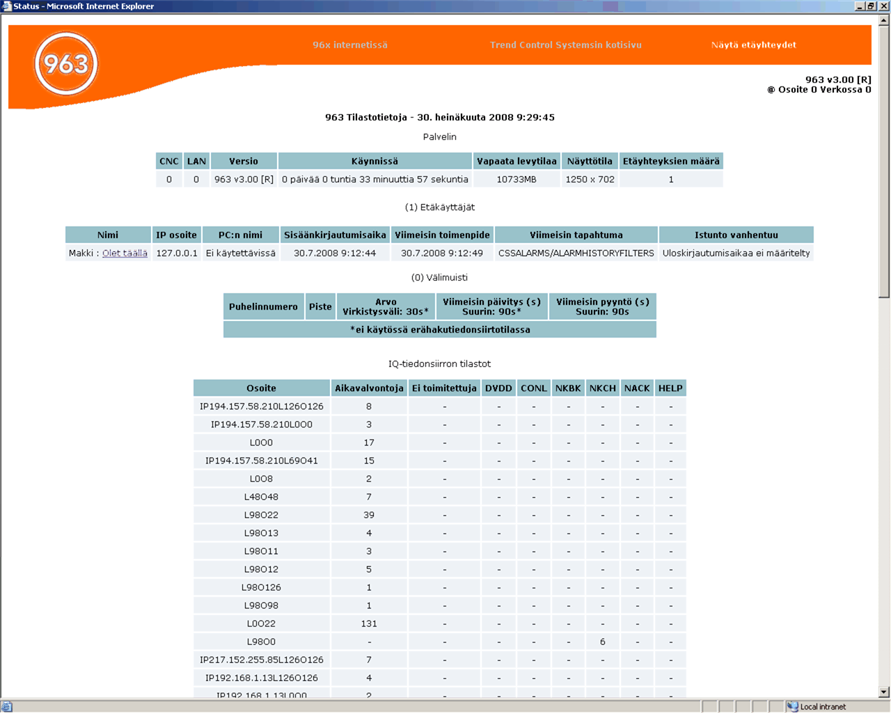

Alla näkyvä Status-sivu näyttää tiedot 963 Serverin tilasta. Tiedot on jaettu useaan taulukkoon, jotka sisältävät erityyppisiä tietoja kuten seuraavassa kuvataan.

|
Taulukko |
Kuvaus |
|
Palvelin |
Tämä sisältää seuraavat tiedot 963 Serveristä: Lan-numero, verkko-osoite, versio, käyntiaika, vapaa levytila, näyttötila ja auki olevien etäyhteyksien määrä. |
|
Etäkäyttäjät |
Tämä taulukko sisältää tiedot parhaillaan kirjautuneena olevista työasemakoneista |
|
Välimuisti |
Tämä taulukko sisältää tiedot kaikista tämänhetkisistä Trendin tiedonsiirtopyynnöistä |
|
IQ-tiedonsiirron tilastot |
Tämä taulukko sisältää tiedot kaikista tiedonsiirtovirheen raportoineista laitteista. |
|
IP-tiedonsiirron tilastot |
Tämä taulukko sisältää tukitiedot tämänhetkisistä IP-yhteysongelmista. |
Näytettävät tiedot ovat riippuvaisia käyttöoikeuksistasi. Jos haluat nähdä kaikki tiedot, sinun tulee kirjautua käyttäjänä, jolla on oikeus ohjelmoida työryhmiä ja käyttäjiä. Jos käyttäjällä ei ole näitä käyttöoikeuksia, hän näkee vain palvelimen tiedot.
Käyttäjillä, joilla on oikeus ohjelmoida työryhmiä ja käyttäjiä, on myös oikeus käyttää Näytä etäyhteydet -painiketta, joka näyttää erillisessä ikkunassa tiedot 963 Serverin yhteyksistä etäkohteisiin ja mahdollistaa yhteyden katkaisemisen tarvittaessa.